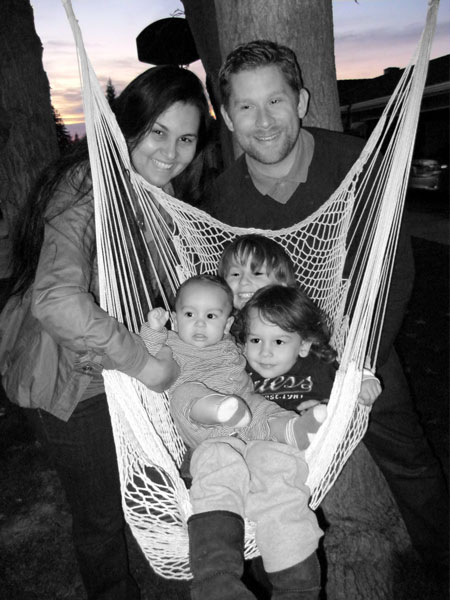

Hey there, thanks for stopping by to learn more about me. My name is Michael, and I am a graduate student earning my MS in Marital and Family Therapy at Loma Linda University. I love learning about families and studying the theories that seek to make sense of why families do what they do. My project, familytherapia.com, is a Wikipedia-style site where I have tried to organize these family concepts and theories in a way that is easy for anybody to learn.
I also love languages and translation. I currently speak English (obviously) and Portuguese fluently and Spanish fluently as well, although it lags behind the other two a bit. I am a freelance translator between English and Portuguese since 2005. In case you are interested in translating between these two languages, you can check out the translation part of the site. Also, if you need a translation done within my area of specialty, feel free to email me for a quote.
I've tried to design the site so that you could have easy access to all the places that you can find me online, such as Facebook and LinkedIn. I've also included some of the projects that I'm currently (and slowly) working on, such as familytherapia.com mentioned above, and albrightfamily.org, which is dedicated to my own family's history.
Hopefully, you will find this site useful for whatever purposes you hoped to achieve when you visited it. If you're interested in learning more about me, you can do so here. Please contact me if you have any questions or suggestions about me or what I do. Thanks again for stopping by!